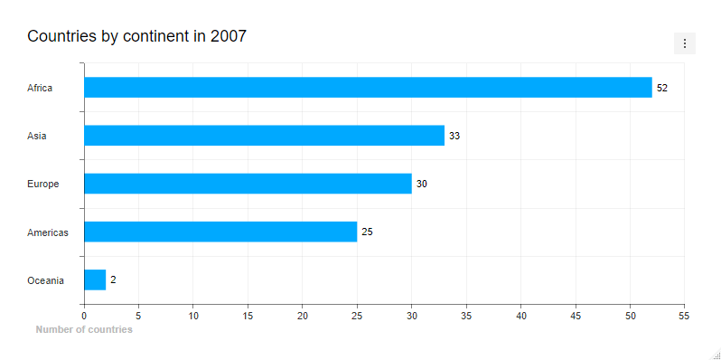
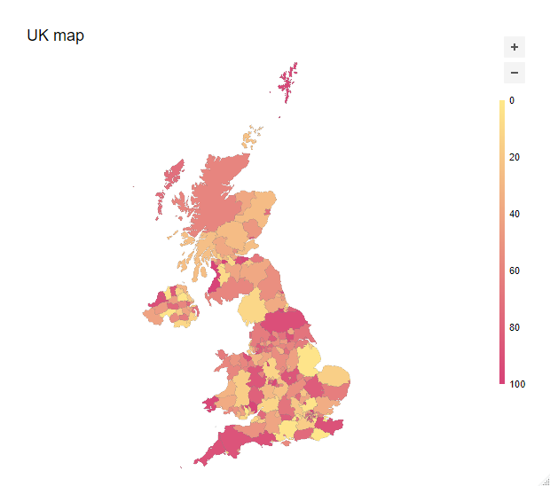

Htmlwidget to create interactive visualisations with JavaScript library tui-chart


Charts
You can create various type of chart : bar, column, line, area, boxplot, scatter, heatmap, treemap, radar, pie.
library(gapminder)
library(tuichartr)
# Datas
n_countries <- gapminder %>%
filter(year == 2007) %>%
count(continent, sort = TRUE)
# Chart
tuichart("bar") %>%
add_data(n_countries, aes(x = continent, y = n)) %>%
tui_chart(title = "Countries by continent in 2007") %>%
tui_xAxis(title = "Number of countries") %>%
tui_legend(visible = FALSE) %>%
tui_series(showLabel = TRUE)
Maps
You can also make maps :
# Retrieve Italy polygons
uk <- ne_states("united kingdom", returnclass = "sf")
# add a random numeric variable
uk$random <- sample(1:100, nrow(uk), TRUE)
# draw map
tuimap() %>%
add_map_data(uk, aes(code = adm1_code, label = name, value = random)) %>%
tui_chart(title = "UK map")
 Victor Perrier
Victor Perrier Fanny Meyer
Fanny Meyer